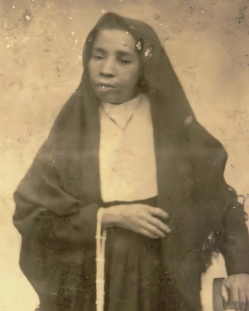

Beata Maria de Araújo
Nascida em Juazeiro do Norte em 23 de maio de 1863, Maria Magdalena do Espírito Santo de Araújo era filha de Antônio da Silva Araújo e Ana Josefa do Sacramento. Descrita por Manoel Diniz como uma mulher mestiça de traços suaves, era conhecida por sua simplicidade e inteligência, apesar de não saber ler nem escrever.
A vida de Maria de Araújo foi marcada pela fé e pelo trabalho desde a infância. Órfã e proveniente de uma família humilde, conciliava as tarefas domésticas com a produção artesanal de tecidos e bonecas. Após um retiro espiritual com Padre Cícero, em 1885, adotou o hábito de beata e passou a dedicar-se integralmente aos cuidados da casa do Padre e à instrução de jovens meninas em seus ofícios. Além disso, colaborou em diversas atividades da comunidade, como a produção de tijolos em uma olaria.
A Sedição de Juazeiro não apagou o brilho da fé que unia Padre Cícero e Maria de Araújo. Em 17 de janeiro de 1914, a morte da beata, em meio àqueles acontecimentos, foi um momento de profunda tristeza para o Padre. Em demonstração de sua devoção, ele providenciou um enterro solene na Capela do Socorro, reafirmando a importância de Maria de Araújo para a comunidade religiosa. No dia 22 de outubro de 1930 seu túmulo foi aberto clandestinamente por ordem do Bispo de Crato. O túmulo, construído no interior da Capela do Socorro, foi totalmente destruído e os restos mortais da beata foram sepultados em local ignorado.
A saúde fragilizada de Maria de Araújo, no contexto histórico e religioso de Juazeiro do Norte, tornou-se objeto de intensos debates e especulações. Embora tenha relatado incômodos estomacais e um episódio de vômito sanguíneo após uma queda, a ausência de diagnósticos médicos precisos e a falta de documentação confiável sobre possíveis doenças como hemofilia, tuberculose ou epilepsia, alimentaram as controvérsias. O laudo médico de Marcos Madeira, que atesta a ausência de lesões na cavidade bucal da Beata, contradiz muitas das alegações e reforça a natureza enigmática dos acontecimentos.
O milagre
No cursinho, Cícero encontrou grandes diferenças entre a religiosidade de Fortaleza e a do vale do Cariri (onde fica a cidade de Crato). Isso se deveu ao fato de que o interior do Ceará sofria com a pouca presença de autoridades eclesiásticas, sobretudo pelo fato de que essas autoridades não estavam dispostas a visitar tais regiões. O jornalista Lira Neto aponta que essa situação criou um problema do ponto de vista do controle realizado pela Santa Sé. Ele afirma que esse vácuo [de presença das autoridades católicas] deu origem a uma religiosidade espontânea no meio do povo, um misticismo rico em manifestações, mas pouco afeito ao controle e aos rituais da Igreja oficial.
Em sua formação como padre, Cícero encontrou um ensino rígido no seminário de Fortaleza. Lá, ele não era considerado um dos melhores alunos, sobretudo nas disciplinas de oratória e canto gregoriano. Além disso, teve problemas com o reitor do seminário, que não concordava com suas opiniões místicas. O reitor do seminário, o francês Pierre-Auguste Chevalier, chegou a sugerir que Cícero não fosse ordenado padre, mas o bispo do Ceará, dom Luis Antônio dos Santos, decidiu ir contra essa recomendação e ordenou Cícero Romão padre no dia 30 de novembro de 1870. Conhecido como padre Cícero agora, ele decidiu retornar para Crato depois de sua ordenação.
Em 1871, padre Cícero foi convidado para celebrar uma missa em Juazeiro, povoado vizinho a Crato. Lá, ele supostamente teve um sonho, interpretado como uma mensagem divina para que ele ficasse no povoado e cuidasse de suas questões religiosas. Padre Cícero recebeu um convite para permanecer no povoado em abril de 1872. No mesmo ano, ele se tornou o capelão da Capela de Nossa Senhora das Dores.
Curiosidades de Padre Cicero
- Os admiradores do Padre Cícero contavam que, entre seus milagres, ele costumava pendurar o chapéu num prego imaginário.
- Acusado de continuar estimulando o fanatismo, Cícero foi suspenso da ordem e entrou para a política. Foi o primeiro prefeito de Juazeiro, tomando posse em 4 de outubro de 1911. Acabou sendo destituído pelo governador Franco Rabelo. Padre Cícero lutou, então, ao lado dos rebeldes contrários a Rabelo, num movimento conhecido como Guerra da Sedição. Rabelo foi deposto e Cícero reassumiu sua posição em 1927.
- Em 1926, Padre Cícero e Lampião se encontraram em Juazeiro do Norte. O encontro, cercado de expectativas e curiosidade, foi marcado por uma tentativa de negociação. Padre Cícero, influente figura política e religiosa, buscava uma solução pacífica para os conflitos na região e viu em Lampião uma peça importante nesse jogo.
- Numa missa, em 1º de março de 1889, um milagre começaria a transformar o homem em lenda: no momento da comunhão, a hóstia teria se transformado em sangue na boca da beata Maria de Araújo.
- Padre Cícero teve participação na política como prefeito, chegou a ser governador do Ceará, e em 1926 foi eleito deputado federal com expressiva votação, mas não desejou assumir o cargo e nem foi ao Rio de Janeiro para a sua posse, segundo alguns historiadores, o objetivo do padre com a sua eleição era de mostrar aos coroneis e poderosos que o povo carregava consigo o poder da mudança!
- Seu enterro foi acompanhado por uma multidão de mais de 60 mil fiéis.
- Em terras herdadas do padre Cícero, o beato José Lourenço (1872-1946) construiu a Comunidade do Caldeirão. Durante o Estado Novo, a Comunidade, considerada um foco de comunismo, foi destruída. Cerca de mil seguidores de José Lourenço organizaram uma nova comunidade na Serra do Araripe, mas foram perseguidos e massacrados.